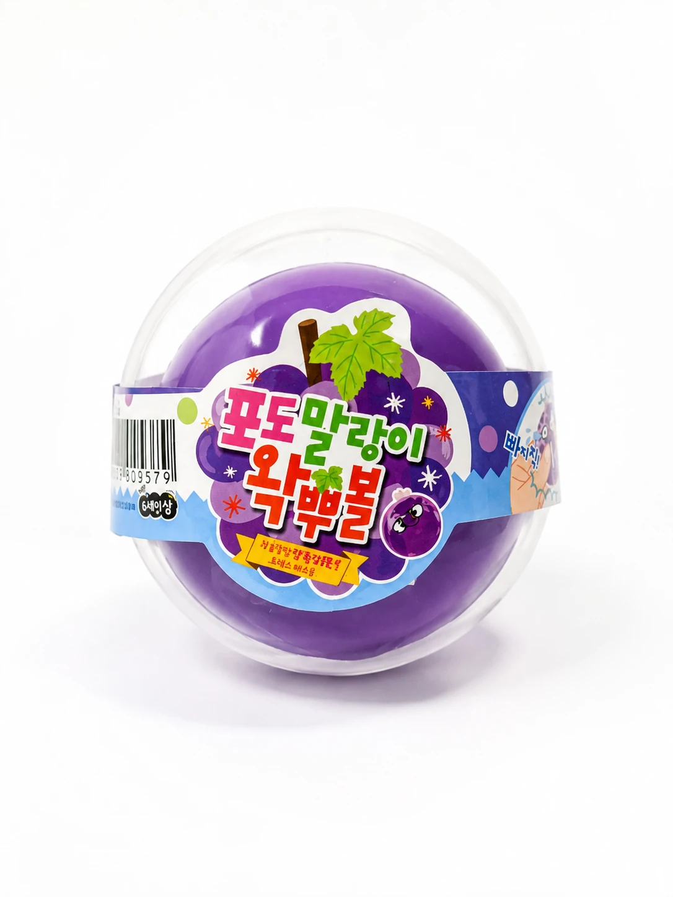

Trending in Korea
Grape Wakppubol Wax-Cracking Ball
A grape-themed wakppubol purchased and photographed in Korea, with a wax outer shell that is cracked for its sound and tactile feel.
Personally PhotographedPersonally Purchased in KoreaSeen in a Korean StoreTrend VerifiedExact Model Unverified
Last checked August 23, 2026
Product details & buying context
- Where it was found or used in Korea
- This specific grape-themed wakppubol was purchased by the site owner from an offline retail display in Korea and photographed in its original rigid clear packaging.
- Who it is relevant for
- Relevant to people interested in tactile toys built around cracking sound and texture. This record does not claim that every wakppubol has the same design, packaging, or instructions.
- Why this product matters
- The product is a physical example of the wax-cracking sensory-toy trend discussed in Korean media in 2026.
- Verification status
- Personally purchased and photographed in Korea. The package identifies it as 포도말랑이 왁뿌볼 and recommends chilled refrigerator storage before use. The exact manufacturer and model number remain unconfirmed.
No exact U.S. retail match has been confirmed. Similar wax-cracking sensory toys are sold in the United States, but any future link must be labeled as a Similar Alternative unless this exact product is verified.